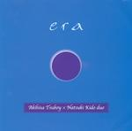

| Artist: | Akihisa Tsuboy x Natsuki Kido duo |
| Title: | Era |
| Label: | Poseidon Records PRF-001 |
| Length(s): | 60 minutes |
| Year(s) of release: | 2002 |
| Month of review: | [12/2003] |
| 1) | Left Window | 11.18 |
| 2) | 006 | 6.49 |
| 3) | Crawler-a | 9.32 |
| 4) | Ripple | 6.42 |
| 5) | Seventeen | 6.24 |
| 6) | Foghone | 5.20 |
| 7) | New Era Has Come | 13.38 |